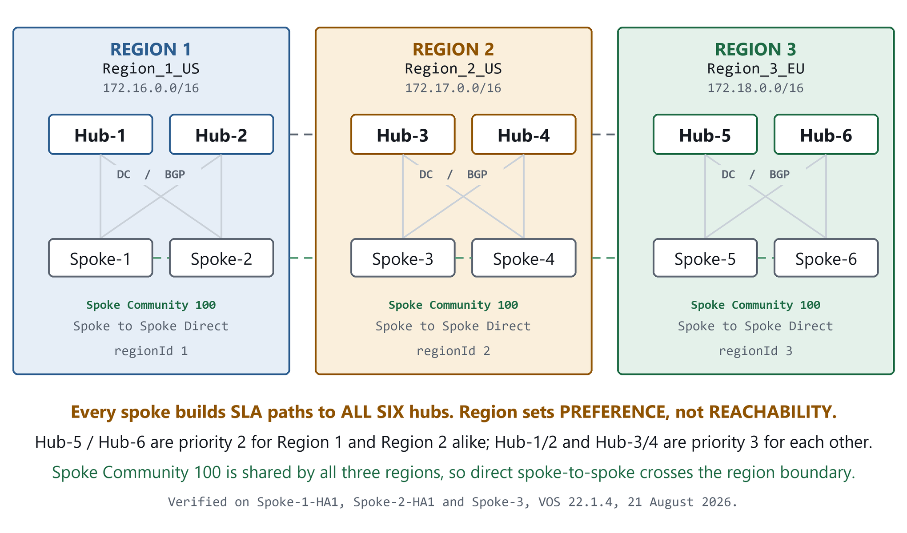
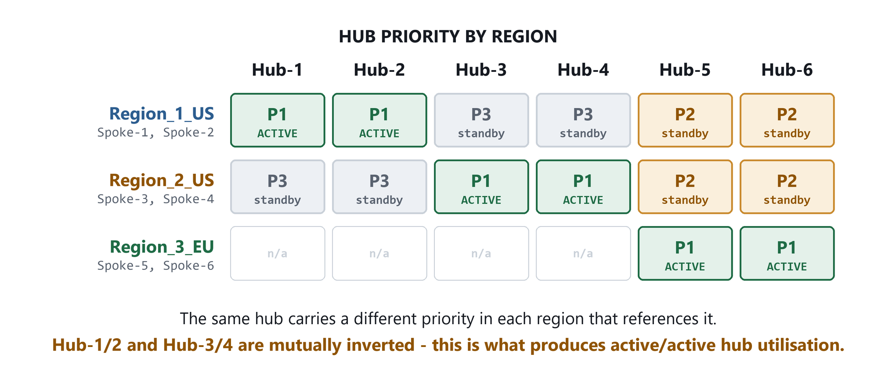
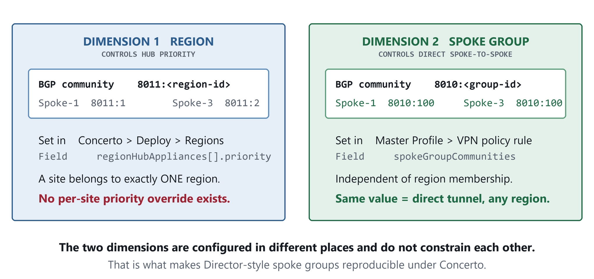
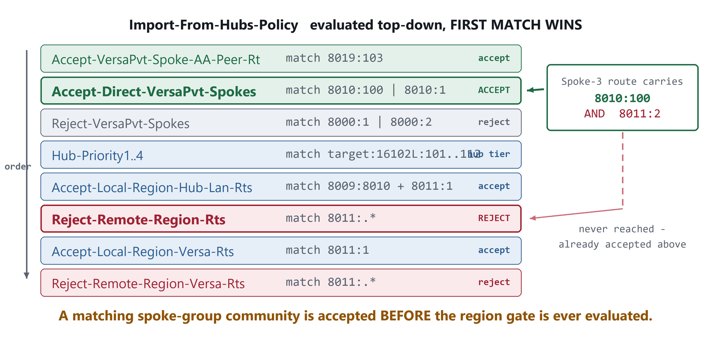

1. The question2. Answers 3. Lab topology4. Region configuration 5. Two independent dimensions ★6. Evidence from live devices 7. Why the region boundary does not block it8. How to build it 9. Comparison with alternatives10. What was not tested
1. The question
In Director, multiple spoke groups can be created inside one region. Some branches prefer Hub-A as primary with Hub-B as backup; other branches in the same region prefer Hub-B as primary with Hub-A as backup. Both hubs carry production traffic and either can absorb all branches on failure.
In Concerto, hub priority is defined at the region level under Deploy > Regions, so every site in that region inherits the same hub preference order — and a site can be assigned to only one region. The portal therefore appears to offer no way to split branches within a region by hub preference.
Three questions follow:
- Q1 — Is there any way to set hub priority per branch, per site group, or per template within a single region?
- Q2 — If not, is the intended workaround two regions that share the same hubs with inverted priorities, splitting the branches between them?
- Q3 — If so, will a branch in Region-A actually establish a backup tunnel to Hub-B, given Hub-B is assigned to another region? Or does region membership limit which hubs a branch can reach?
The common conclusion is that no routing-based solution exists and that PBF is the answer. That conclusion is incorrect — and Q3, which decides the whole matter, usually goes unanswered.
2. Answers
| Question | Answer | Evidence |
|---|---|---|
| Q1 Per-site hub priority inside one region? | No. | Priority is an attribute of the region object only (regionHubAppliances[].priority). The site object carries no priority field — it inherits an ordered controllerList. A site has exactly one regionUuid. |
| Q2 Two regions, shared hubs, inverted priority? | Yes — verified working. | Both US regions reference all six hubs with mutually inverted priority. Section 4. |
| Q3 Will a branch reach a hub in another region? | Yes. Region sets preference, not reachability. | Every spoke holds SLA paths to all six hubs and a 0.0.0.0/0 from all six. Sections 6.1 and 6.2. |
| Bonus Does splitting cost direct spoke-to-spoke? | No — if the profiles share a spoke-group community. | Spoke-1 (Region 1) reaches the Spoke-3 LAN via next-hop 172.25.0.21 = Spoke-3, direct. Section 6.3. |
3. Lab topology
Three regions, six hubs, six spokes, one tenant. Region 1 and Region 2 are the pair under test; Region 3 contributes the shared priority-2 hubs.

4. Region configuration — hub priority
Read live from the Concerto REST API, GET /portalapi/v1/tenants/{tenant}/regions/{uuid}.

| Region | regionId | Priority 1 | Priority 2 | Priority 3 |
|---|---|---|---|---|
| Region_1_US | 1 | Hub-1, Hub-2 | Hub-5, Hub-6 | Hub-3, Hub-4 |
| Region_2_US | 2 | Hub-3, Hub-4 | Hub-5, Hub-6 | Hub-1, Hub-2 |
| Region_3_EU | 3 | Hub-5, Hub-6 | — | — |
Site-to-region binding, from GET /portalapi/v1/tenants/{tenant}/sites/{uuid}:
| Site group | Appliances | Region | controllerList order |
|---|---|---|---|
| Region1_Spokes1_2 | Spoke-1-HA1/HA2, Spoke-2-HA1/HA2 | Region_1_US | Hub-1, Hub-2, Hub-5, Hub-6, Hub-3, Hub-4 |
| Region2_Spokes3_4 | Spoke-3, Spoke-4 | Region_2_US | Hub-3, Hub-4, Hub-5, Hub-6, Hub-1, Hub-2 |
Both site groups carry the same six hubs — only the order differs, and that order derives from the owning region's priority. This is the first indication that region does not restrict which hubs a branch may use.
5. Two independent dimensions
The confusion comes from treating “region” as a single setting that governs everything. It does not. Two separate BGP community namespaces are at work, set in two different parts of the product.

8011:<region-id>. Direct spoke-to-spoke rides on the spoke-group community 8010:<group-id>. Changing one does not disturb the other.| Namespace | Controls | Value in this lab | Configured in |
|---|---|---|---|
8011:<region-id> | Region membership — drives hub priority | Spoke-1 = 8011:1, Spoke-3 = 8011:2 | Deploy > Regions |
8010:<group-id> | Spoke group — direct spoke-to-spoke eligibility | Both = 8010:100 | Master Profile > VPN policy rule |
target:16102L:101/102/111/112 | Hub priority tier 1 / 2 / 3 / 4 | matched by Hub-Priority1..4 terms | derived from region priority |
8000:1 | Wildcard spoke | both spokes | derived |
8019:103 | Active/active HA peer | Spoke-1 only (it is an HA pair) | derived |
6. Evidence from the live devices
6.1 Default route — the active/active proof
This is the single most important output in the write-up. Each spoke receives 0.0.0.0/0 from all six hubs; only its own region's priority-1 pair is marked active (+).
Spoke-1-HA1 (Region_1_US)
admin@Spoke-1-HA1-cli> show route routing-instance TEST-100-Enterprise | nomore
+ - Active Route
Prot Type Dest Address/Mask Next-hop Age Nexthop name
---- ---- ----------------- ----------- -------- --------------
BGP N/A +0.0.0.0/0 172.25.0.5 01:18:35 Hub-1-Region-1
BGP N/A +0.0.0.0/0 172.25.0.7 01:18:35 Hub-2-Region-1
BGP N/A 0.0.0.0/0 172.25.0.17 00:00:57 Hub-3-Region-2
BGP N/A 0.0.0.0/0 172.25.0.19 00:01:13 Hub-4-Region-2
BGP N/A 0.0.0.0/0 172.25.0.25 00:56:31 Hub-5-Region-3
BGP N/A 0.0.0.0/0 172.25.0.27 00:55:42 Hub-6-Region-3Spoke-3 (Region_2_US)
admin@Spoke-3-cli> show route routing-instance TEST-100-Enterprise | nomore
Prot Type Dest Address/Mask Next-hop Age Nexthop name
---- ---- ----------------- ----------- -------- --------------
BGP N/A +0.0.0.0/0 172.25.0.17 00:47:36 Hub-3-Region-2
BGP N/A +0.0.0.0/0 172.25.0.19 00:53:39 Hub-4-Region-2
BGP N/A 0.0.0.0/0 172.25.0.25 00:58:41 Hub-5-Region-3
BGP N/A 0.0.0.0/0 172.25.0.27 00:58:42 Hub-6-Region-3
BGP N/A 0.0.0.0/0 172.25.0.5 00:15:40 Hub-1-Region-1
BGP N/A 0.0.0.0/0 172.25.0.7 00:15:40 Hub-2-Region-16.2 SLA paths — Q3 answered
Q3 asked whether region membership limits which hubs a branch can reach. It does not. Columns trimmed for legibility; one representative up path shown per remote site.
admin@Spoke-1-HA1-cli> show orgs org TEST-100 sd-wan sla-monitor status | tab | nomore
PATH REMOTE SITE FWD LOCAL WAN REMOTE PATH PATH CONN
HANDLE NAME CLASS LINK WAN LINK MTU STATE STATE
------- -------------- ----- --------- -------- ---- ------------- -----
6627840 Hub-1-Region-1 fc_nc MPLS-1 MPLS 1500 disable up
6693376 Hub-2-Region-1 fc_nc MPLS-1 MPLS 1500 disable up
7028992 Hub-3-Region-2 fc_nc INET-2 INET 1500 disable up
7094528 Hub-4-Region-2 fc_nc INET-2 INET 1500 disable up
7291136 Hub-5-Region-3 fc_nc INET-2 INET 1500 disable up
7356672 Hub-6-Region-3 fc_nc INET-2 INET 1500 disable up
6889988 Spoke-2-HA1 fc_ef MPLS-1 MPLS-1 1500 suspend up
6955524 Spoke-2-HA2 fc_ef MPLS-1 MPLS-2 1500 suspend up
7160068 Spoke-3 fc_ef INET-2 INET-1 1500 suspend up
7225604 Spoke-4 fc_ef INET-2 INET-1 1500 suspend upAll six hubs are up from a Region-1 branch. Spoke-3 and Spoke-4 — both in Region 2 — appear as direct spoke-to-spoke peers. The reciprocal view from Spoke-3 confirms it:
admin@Spoke-3-cli> show orgs org TEST-100 sd-wan sla-monitor status | tab | nomore
6755332 Spoke-1-HA1 fc_ef INET-1 INET-2 1500 suspend-retry up
6820868 Spoke-1-HA2 fc_ef INET-1 INET-1 1500 suspend-retry upsuspend / suspend-retry matters. These are dormant on-demand tunnels — no traffic is flowing over them, yet they are still listed as candidate paths. Presence in this table therefore does not require active traffic. If a spoke-to-spoke path is absent from the list, it is because the peer is not a candidate at all.6.3 Cross-region spoke-to-spoke is DIRECT, not hairpinned
The obvious risk of splitting one region into two is that branch-to-branch traffic starts transiting a hub — which would defeat the purpose of spreading hub load. It does not happen here. From Spoke-1 (Region 1), reaching the Region-2 branches:
BGP N/A +172.17.111.0/24 172.25.0.21 00:10:10 Spoke-3 <- DIRECT
BGP N/A +172.17.112.0/24 172.25.0.23 00:10:09 Spoke-4 <- DIRECT
BGP N/A 172.17.111.0/24 172.25.0.17 00:00:58 Hub-3-Region-2
BGP N/A 172.17.111.0/24 172.25.0.19 00:01:14 Hub-4-Region-2
BGP N/A 172.17.111.0/24 172.25.0.25 00:22:57 Hub-5-Region-3
BGP N/A 172.17.111.0/24 172.25.0.5 00:22:55 Hub-1-Region-1The active route to each Region-2 branch is the branch itself. The hub paths are installed as fallbacks. This is exactly the behaviour a Director spoke group produces.
6.4 The BGP communities
Outbound stamping policy on each branch — where the two dimensions become visible side by side.
Spoke-1-HA1 (Region_1_US)
show configuration routing-instances TEST-100-Control-VR protocols bgp 11 \
routing-peer-policy TO_SDWAN | display set | nomore
term SpokeGroup-Community-VersaPvt-1 action community 8010:100 <- SPOKE GROUP
term SpokeGroup-Community-VersaPvt-2 action community 8010:1
term VersaPvt-Region action community 8011:1 <- REGION
term VersaPvt-Wildcard-Spoke action community 8000:1
term VersaPvt-Spoke-AA-Peer action community 8019:103Spoke-3 (Region_2_US)
term SpokeGroup-Community-VersaPvt-1 action community 8010:100 <- SAME
term SpokeGroup-Community-VersaPvt-2 action community 8010:0
term VersaPvt-Region action community 8011:2 <- DIFFERENT
term VersaPvt-Global-Region action community 8011:0
term VersaPvt-Wildcard-Spoke action community 8000:1| Spoke-1 (Region 1) | Spoke-3 (Region 2) | Result | |
|---|---|---|---|
Spoke group 8010:x | 8010:100 | 8010:100 | MATCH → direct spoke-to-spoke |
Region 8011:x | 8011:1 | 8011:2 | DIFFER → different hub priority |
7. Why the region boundary does not block it
The branch import policy explains the whole behaviour. Terms are evaluated top-down and the first match wins.

Accept-Direct-VersaPvt-Spokes matches the spoke-group community and sits above Reject-Remote-Region-Rts, which matches any region community. A route from another region carrying a matching spoke-group community is therefore accepted before the region gate is ever consulted.Verbatim from Spoke-1-HA1:
Import-From-Hubs-Policy term Accept-Direct-VersaPvt-Spokes-TEST-100-Enterprise
match community "((^|,)8010:100($|,))|((^|,)8010:1($|,))"
action community 8009:8009
Import-From-Hubs-Policy term Reject-Remote-Region-Rts
match community "((^|,)8011:.*($|,))"
Import-From-Hubs-Policy term Accept-Local-Region-Versa-Rts
match community "((^|,)8011:1($|,))"Spoke-3 advertises with both 8010:100 and 8011:2. The 8011:2 alone would be dropped by Reject-Remote-Region-Rts. The 8010:100 is matched first, so the route is accepted. That single ordering fact is the entire answer.
8. How to build it
| Step | Where | What |
|---|---|---|
| 1 | Deploy > Regions | Create Region-A. Add Hub-A priority 1, Hub-B priority 2. |
| 2 | Deploy > Regions | Create Region-B. Add Hub-B priority 1, Hub-A priority 2. The inversion is the point. |
| 3 | Deploy > Sites | Assign half the branch sites to Region-A, half to Region-B. |
| 4 | Master Profile > VPN policy rule | On both profiles set the same spokeGroupCommunities value (here: 100) and the same topology (here: Full Mesh). |
| 5 | Verify | show route routing-instance <org>-Enterprise — confirm 0.0.0.0/0 active via its own priority-1 hubs, installed-but-inactive via the rest. |
| 6 | Verify | show orgs org <org> sd-wan sla-monitor status | tab — confirm all hubs up and the other region's branches present as peers. |
spokeGroupCommunities values, hub priority still works perfectly — but branch-to-branch traffic between the two halves will hairpin through a hub. Keep the value identical.8.1 The master profile fields
Read from GET /portalapi/v1/tenants/{tenant}/profiles/basic/{federatedPath}/deep. Both spoke profiles carry an identical rule:
"Enterprise-VPN": {
"topology" : "Full Mesh",
"spokeGroupCommunities" : { "value": [ { "value": "100" } ] },
"scope" : "Region", // null on the Region-2 profile
"otherRegionHubLanRoutes" : "REACH_VIA_LOCAL_HUB",
"rejectOtherRegionHubLanRoutes" : true
}The last two fields generate the Reject-Remote-Region-Rts and Accept-Local-Region-Hub-Lan-Rts policy terms seen in section 7. The region gate is therefore a profile setting, not hardcoded behaviour. [Inference]
Note the scope asymmetry: the Region-1 profile is scoped Region, the Region-2 profile is null (global), which is why Spoke-3 additionally stamps 8011:0 and 8010:0. Functionally irrelevant here — the overlap that matters is 8010:100 — but matching scope across both profiles makes the two sides symmetric.
9. Comparison with the alternatives
| Director spoke groups | Two Concerto regions + shared spoke group | Concerto PBF | |
|---|---|---|---|
| Splits hub preference | Yes | Yes | Yes, per matched traffic only |
| Failover semantic | Routing convergence | Routing convergence | Policy next-hop fallback |
| Covers all traffic | Yes | Yes | Only what the rule matches |
| Direct spoke-to-spoke kept | Yes | Yes, if the spoke group matches | Yes |
Visible in show route | Yes | Yes | No — policy hit counters instead |
| Config surface | Group membership | Region + profile VPN rule | Rule per site |
PBF remains the right tool when steering must diverge from routing preference — per-application, per-source-zone, or per-user hub selection. For “these branches prefer Hub-A, those prefer Hub-B, with automatic failover”, the region plus spoke-group approach is the lighter and more transparent answer.
10. What was not tested
- Failover timing. The backup routes are installed and dormant; promotion time was not measured. Shutting Hub-1 and Hub-2 and timing the
0.0.0.0/0flip to active on Spoke-1 would produce a convergence number. - Spoke-4 was not logged into directly — its management address is not on the lab management subnet. It is confirmed as an SLA peer and an active next-hop from Spoke-1, Spoke-2 and Spoke-3.
- Version. This is Concerto 12.2.2 with VOS 22.1.4. On this build the mesh topology rule endpoint returns
HTTP 500 "MESH Not supported at this time!", so Concerto 13.x may expose the same settings through a different object. - Scale. Two regions and four branches. No conclusion is offered about behaviour with many regions or hub counts beyond six.
10.1 Commands used
show route routing-instance <ORG>-Enterprise | nomore
show orgs org <ORG> sd-wan sla-monitor status | tab | nomore
show interfaces brief | tab
show configuration routing-instances <ORG>-Control-VR protocols bgp 11 \
routing-peer-policy TO_SDWAN | display set | nomore
show configuration | display set | match community | nomore
GET /portalapi/v1/tenants/{tenant}/regions/{uuid}
GET /portalapi/v1/tenants/{tenant}/sites/{uuid}
GET /portalapi/v1/tenants/{tenant}/profiles/basic/{federatedPath}/deep